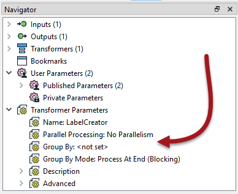
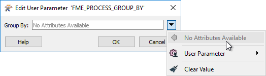

After completing this unit, you’ll be able to:
Parallel processing is a way to improve performance on high-end machines by running multiple actions at once as a set of separate processes. A system architecture of multiple processors with multiple cores is helpful because the system can assign each process to a different core. With multiple processes running on multiple cores, the entire translation can run several times quicker than on a single core.
Parallel processing in FME covers not an entire workspace but just a specific subsection of workspace. You control where parallel processing occurs through custom transformers, a natural method to subdivide a large translation.
Parallel processing runs on features grouped by attribute values, similar to Group-Based transformers. Custom transformers using parallel processing assign each group to a separate process.
Each custom transformer has a set of parameters - located in the Navigator window - that relates explicitly to parallel processing. Here you can determine the level of parallel processing and the Group By attribute that define the parallel processing groups:

The parameter that controls parallel processing allows different levels of effort to be applied. Each level specifies the number of processes to run simultaneously relative to the number of cores available:
| Parameter | Processes | 2 Cores | 4 Cores | 8 Cores |
|---|---|---|---|---|
| No parallelism | 1 Process | 1 Process | 1 Process | 1 Process |
| Minimal | Cores / 2 | 1 Process | 2 Processes | 4 Process |
| Moderate | Cores x 1 | 2 Processes | 4 Processes | 8 Process |
| Aggressive | Cores x 1.5 | 3 Processes | 6 Processes | 12 Process |
| Extreme | Cores x 2 | 4 Processes | 8 Processes | 16 Process |
As mentioned above, minimal parallelism results in two simultaneous FME processes on a quad-core machine. Extreme parallelism would result in eight (assuming the workspace has eight tasks to process simultaneously).
There is also a hard cap for each FME license level:
| FME Edition | Process Cap | 2 Cores | 4 Cores | 8 Cores |
|---|---|---|---|---|
| Base Edition | 4 processes | Maximum 4 processes | Max 4 processes | Max 4 processes |
| Professional Edition | 8 processes | Maximum 4 processes | Max 8 processes | Max 8 processes |
| All Other Editions | 16 processes | Maximum 4 processes | Max 8 processes | Max 16 processes |
So, if you have a Base Edition license, you can never have more than four processes at one time, regardless of machine type and the parallelism parameter. The quad-core machine in the above example can never have more than eight processes since that is the maximum that “extreme” parallel processing allows.
The Parallel Process By parameter requires the author to select an attribute, and - as already covered - selecting attributes for a custom transformer parameter requires some consideration.
In particular, you cannot simply pick an attribute to use for this parameter’s value:

Instead, you can publish this parameter (and one for Group By Mode) to make them available as one of the custom transformer parameters:

The keys to parallel processing are designing a custom transformer as a standalone subsection and defining the processing groups.
In essence, the custom transformer splits features into groups, processes each as a separate action, and then combines them back into a single group on exit.
It’s essential to be aware that there can be no relationship between features in different groups because each group is processed independently. If features are related, and their results depend on each other, they must be in the same group.
The easiest way to think of this is that the custom transformer itself is a Group-Based transformer. Because it is a wrapper for all the individual FME transformers in the definition, it allows those transformers to operate in groups, even if they are Feature-Based.
Sometimes none of the incoming data is related to each other and must be split into arbitrary groups for processing. In these cases, where there is no identifier to define groups, one can be created manually by generating attributes with the ModuloCounter or RandomNumberGenerator transformers.
For example, the author of the workspace below has many address features from which to create labels. To speed the process, they activate parallel processing:

They could group by PostalCode but choose not to because all addresses fall inside only one of two postal codes. Therefore they create an artificial group using the ModuloCounter. Note the Group By parameter in the custom transformer is set to the _modulo_count attribute.
In such a scenario, it’s best to create only one group per intended FME process. For example, on a quad-core (four-core) computer, with an FME Professional license and Extreme parallel processing, a maximum of eight processes at a time are permitted. Therefore - as shown here - the optimum number of groups to use is also eight.